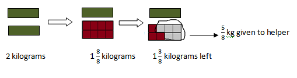
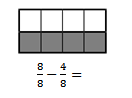
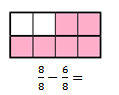
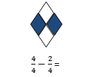
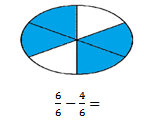
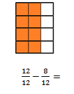
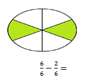
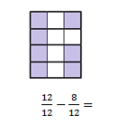
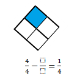

Explore and Discover!
Explore and Discover!
Father bought 2 kilograms of fruits from the market. He gave 5/8kg to his helper. How many kg of fruits were left for his family? How will you solve the problem?
Study the illustration and solution below.
 Let's Practice!Find the correct answer.
 4/8
 2/8
 2/4
 2/6
 9/12
 4/6
 8/12
 3/4